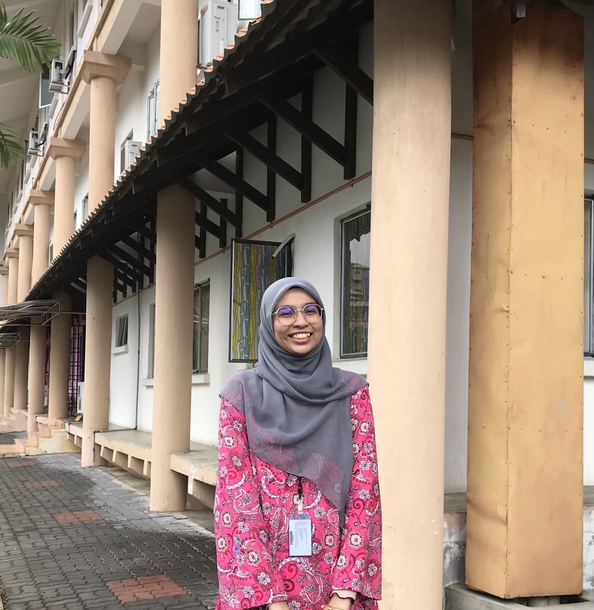

| NAME | Tuan Nur Amirah Safiah Binti Tuan Almadi |
|---|---|
| AGE | 21 |
| DATE OF BIRTH | 23 December 2001 |
| PLACE OF BIRTH | Hospital Pasir Mas |
| RELIGION | Islam |
| GENDER | Female |
| PLACE LIVED | Machang, Kelantan |
| FAVOURITE FOOD |
|
| FAVOURITE DRINK |
|
| ADDRESS | PT 3498, Taman Impian Putra Machang 18500 Kelantan |